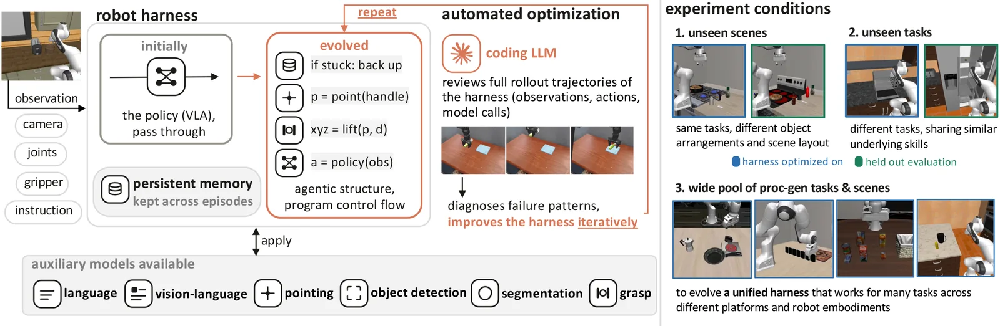
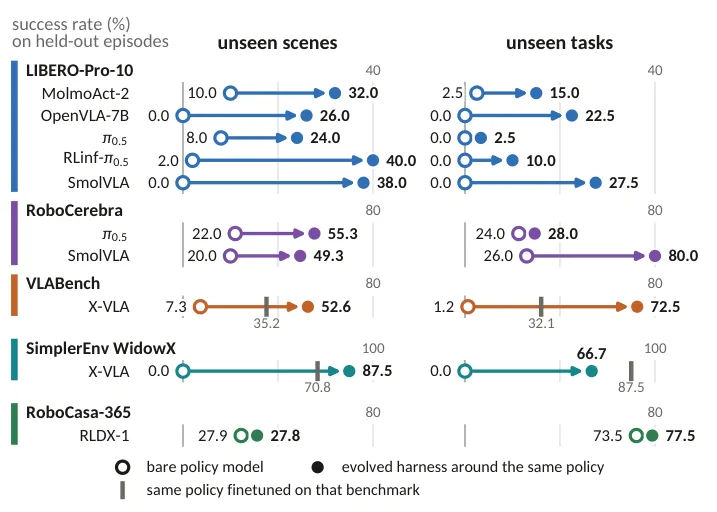
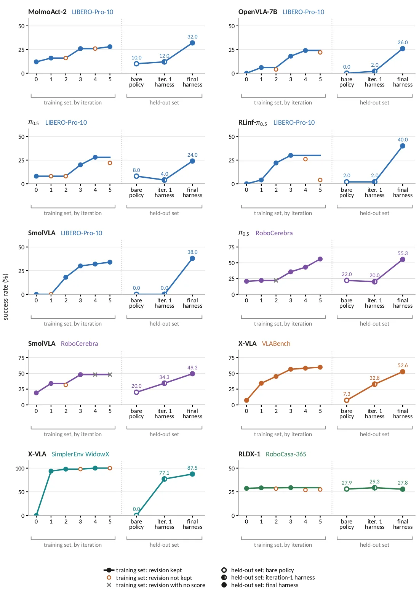
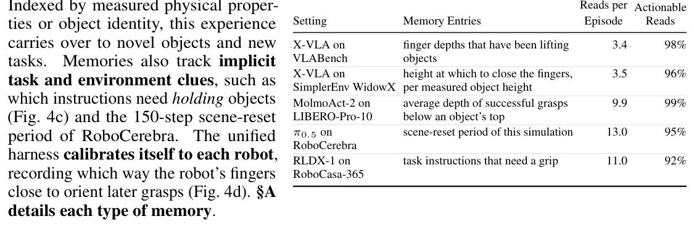

O Custo Oculto da Adaptação Robótica
A integração de modelos de linguagem em agentes robóticos tem mostrado resultados promissores, mas a adaptação desses sistemas a novos ambientes ou hardware permanece um gargalo significativo. Tradicionalmente, ajustar uma política robótica para um novo cenário exige a coleta de novas demonstrações e o fine-tuning (treinamento adicional) dos pesos do modelo. Esse processo é demorado, custoso e, muitas vezes, impraticável quando se lida com múltiplas configurações de robôs ou tarefas distintas.
Uma alternativa emergente envolve o uso de 'harnesses' (ou arneses) — estruturas de código que medeiam quando e como chamar o modelo de política, qual contexto fornecer e como interpretar a saída. Sistemas recentes, como VoLo e Harness VLA, demonstram que envolver uma política congelada (frozen policy) em uma harness bem projetada pode oferecer ganhos substanciais de desempenho sem a necessidade de atualizar os pesos do modelo base.
No entanto, o projeto dessas harnesses ainda é, predominantemente, uma tarefa manual. Engenheiros seguem um ciclo de tentativa e erro: executam o agente, observam falhas, diagnosticam causas e modificam o código de controle. Esse loop é lento e difícil de escalar, especialmente quando se trata de analisar longas gravações de rollouts (execuções do robô). Os autores deste paper questionam se todo esse processo de engenharia pode ser automatizado.
Introduzindo o RoboArchitect
O RoboArchitect é uma proposta para automatizar o design e a otimização de harnesses ao redor de políticas robóticas congeladas. Em vez de depender de especialistas humanos para escrever e refinar o código de controle, o sistema utiliza um modelo de codificação para observar as execuções do robô, diagnosticar modos de falha e iterativamente revisar a harness.
A premissa central é que a otimização da harness oferece uma alternativa eficaz ao fine-tuning. Ao transformar uma política geral em um especialista para uma configuração específica através da lógica de controle, é possível alcançar desempenho superior, especialmente em cenários onde a política original não foi treinada especificamente para o benchmark de teste.
O sistema não atualiza nenhum peso do modelo de política. Em vez disso, ele evolui o código que envolve o modelo, permitindo que o robô se adapte a novas cenas e tarefas apenas através da mudança na lógica de decisão e no uso de ferramentas auxiliares de visão e linguagem.

Mecanismo: Como a Evolução da Harness Funciona
O núcleo do RoboArchitect é um loop de otimização automatizado. O sistema começa com uma política base congelada, tipicamente um modelo Vision-Language-Action (VLA). A cada iteração, o modelo de codificação recebe acesso às gravações passo a passo (rollouts) das execuções do robô. Com base nesses registros, ele identifica onde e por que o robô falhou.
O diagnóstico não se limita a detectar o erro; o modelo propõe uma versão atualizada da harness para corrigir o problema. Essa harness evoluida é então testada em um conjunto de episódios de treinamento. O processo se repete, permitindo que a harness refine sua lógica de controle iterativamente.
Para evitar o overfitting (sobreajuste) aos episódios específicos de treinamento, os autores dividem rigorosamente os benchmarks em conjuntos de treinamento e conjuntos mantidos em reserva (held-out). A avaliação ocorre em dois cenários distintos: cenas inéditas (onde as tarefas são as mesmas, mas a disposição dos objetos muda) e tarefas inéditas (onde os objetivos são diferentes, testando a transferência de habilidades manipulativas).
Resultados: Superando o Fine-Tuning
Os resultados apresentados pelo RoboArchitect são significativos. Ao envolver políticas congeladas em harnesses evoluídas, o sistema elevou a taxa de sucesso média de 9,7% para 43,3% em cenas inéditas, um aumento de 4,5 vezes. Em tarefas inéditas, a taxa de sucesso saltou de 12,7% para 40,2%, um aumento de 3,2 vezes. Esses ganhos foram observados através de múltiplos benchmarks e políticas diferentes.
Um ponto crucial é que os maiores ganhos ocorreram quando a política era aplicada em configurações fora da distribuição de treinamento (out-of-domain). Nesses casos, a harness evoluída não apenas adaptou a política geral, mas frequentemente superou a versão do mesmo modelo que havia sido fine-tuned no benchmark. Isso sugere que a otimização da lógica de controle pode ser mais eficiente do que o ajuste fino dos pesos do modelo para certas adaptações.
O sistema também demonstrou capacidade de criar estratégias de controle intuitivas. Por exemplo, em situações onde o braço do robô travava, a harness aprendeu a levantar o braço para liberar o bloqueio. Em outros casos, quando um obstáculo bloqueava o caminho vertical, a harness optou por alcançar horizontalmente, uma estratégia que não era óbvia na política base.

Memória Persistente Emergente
Além da otimização da lógica de controle, o RoboArchitect demonstrou a capacidade de evoluir sua própria memória persistente. A harness aprendeu a armazenar experiências úteis durante os episódios de treinamento para utilizá-las em decisões futuras.
Um exemplo claro foi o armazenamento de profundidades de preensão efetivas. Em vez de tentar preensão em qualquer profundidade, a harness evoluída lembrava qual profundidade funcionava melhor para objetos específicos e aplicava esse conhecimento em episódios subsequentes. Isso transforma a harness de um simples roteador de comandos em um agente com história e aprendizado contínuo, mesmo sem alterar os pesos do modelo de política.
Essa memória persistente é acessada frequentemente durante as execuções e fornece informações acionáveis que guiam ações futuras, aumentando a eficiência e a taxa de sucesso do robô em tarefas complexas.

Avaliação em Diversos Ambientes
Os autores avaliaram o RoboArchitect em uma variedade de benchmarks, incluindo LIBERO-Pro-10, RoboCerebra, VLABench, RoboCasa-365 e SimplerEnv. As políticas testadas incluíram MolmoAct-2, OpenVLA-7B, π0.5, entre outras. A avaliação cobriu diferentes níveis de distância entre os dados de treinamento da política e o benchmark de avaliação, desde configurações in-distribution até completamente fora da distribuição.
Um experimento adicional evoluiu uma única harness unificada que funcionava através de múltiplos benchmarks simultaneamente, envolvendo diferentes embodiments de robôs (como Franka Panda, WidowX e o manipulador móvel do Google). Isso demonstrou que o sistema pode descobrir mecanismos de agente compartilhados e estruturas de memória persistentes que são robustas a variações no hardware e no simulador.
Os resultados indicam que há uma margem significativa de melhoria no desempenho de manipulação robótica que reside na arquitetura do agente (a harness) e não apenas na política de baixo nível. Automatizar o design dessa arquitetura pode desbloquear esse potencial sem a necessidade de recursos computacionais massivos para re-treinamento.
Implicações para o Futuro da Robótica
O trabalho do RoboArchitect sugere uma mudança de paradigma na forma como abordamos a adaptação de agentes robóticos. Em vez de focar exclusivamente no aumento da capacidade dos modelos de política ou na coleta massiva de dados para fine-tuning, a otimização da lógica de controle emergente pode ser uma via mais eficiente e escalável.
A capacidade de um sistema de diagnosticar falhas e auto-revisar seu próprio código de controle abre caminho para agentes robóticos mais autônomos e resilientes. A memória persistente evolvida automaticamente adiciona uma camada de inteligência contextual que é crucial para tarefas de longa duração.
Embora as limitações, como a dependência de simulação e o número fixo de iterações, devam ser endereçadas em trabalhos futuros, o RoboArchitect estabelece uma prova de conceito sólida de que a engenharia de harnesses automatizada é uma área promissora para o avanço da robótica baseada em IA.

Conclusão
O RoboArchitect apresenta uma abordagem inovadora para a adaptação de agentes robóticos, demonstrando que a otimização automatizada de harnesses pode superar métodos tradicionais de fine-tuning. Ao evoluir a lógica de controle e a memória persistente ao redor de políticas congeladas, o sistema alcança ganhos substanciais de desempenho em cenários diversos e desafiadores.
Os resultados destacam que a arquitetura do agente é um componente crítico para o sucesso da manipulação robótica, e que sua otimização automática pode desbloquear potencial significativo sem a necessidade de atualizações de pesos do modelo. Este trabalho convida a comunidade a reconsiderar o equilíbrio entre o desenvolvimento de políticas mais complexas e o refinamento inteligente das estruturas que as envolvem.
O que fica
- O RoboArchitect usa um modelo de código para evoluir iterativamente a 'arnês' de controle de um robô, diagnosticando falhas e revisando o código.
- Em benchmarks variados, a arnês evoluída elevou a taxa de sucesso de 9,7% para 43,3% em cenas inéditas, superando versões fine-tuned.
- O sistema desenvolveu memória persistente automática, armazenando experiências como profundidades de preensão para decisões futuras.
- Limitações incluem escopo em simulação e um teto fixo de 5 iterações de otimização, deixando a escalabilidade aberta para investigação.
Paper original: RoboArchitect: Automating the Design of Robotic Agents with Persistent Memory
Comentários
Nenhum comentário ainda. Seja o primeiro.